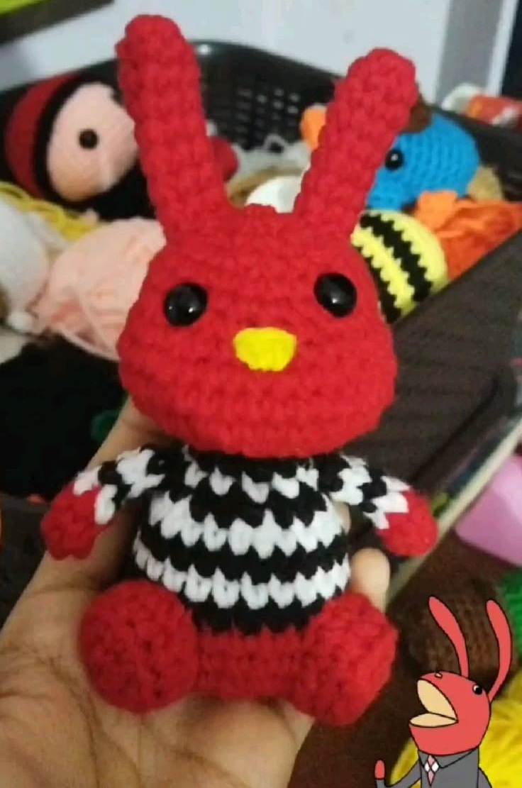
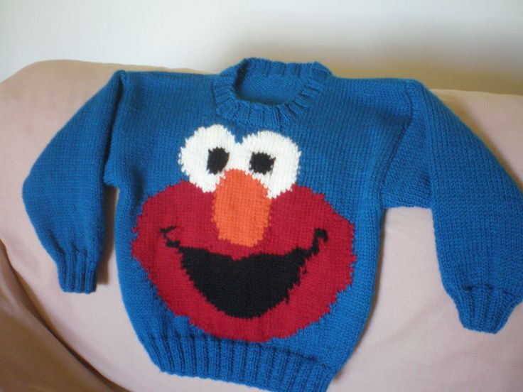
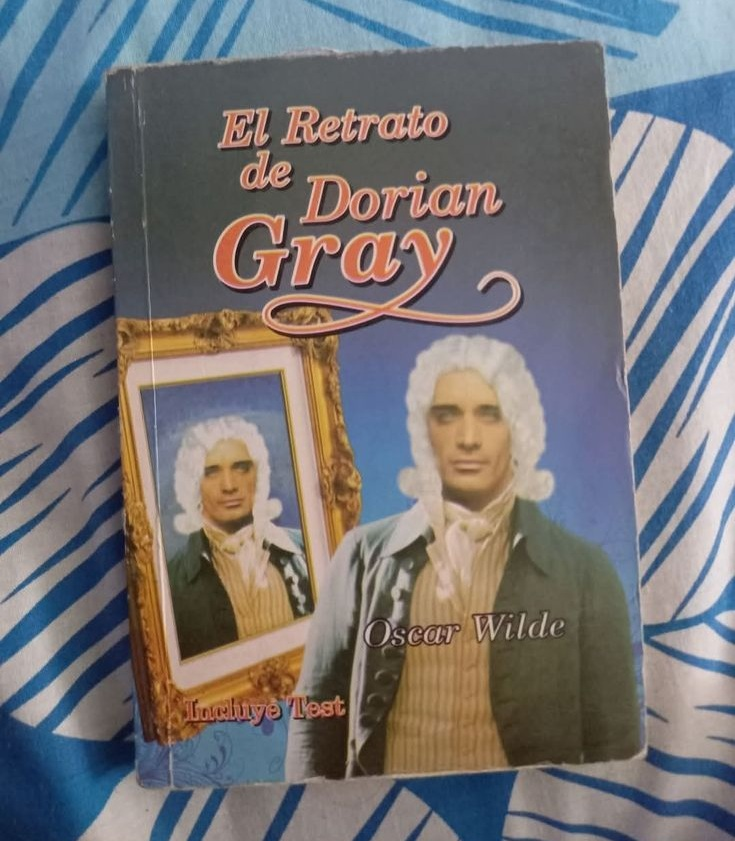

@carlitos_mtz02
Publicado hace 2 h
Perdida

Llavero de Juan Carlos Bodoque
Perdido: 19 de abril | Edificio P213
Se perdió en una banca de hasta atrás del salón.
Comunidad de la Facultad de Ciencias
@carlitos_mtz02
Publicado hace 2 h

Perdido: 19 de abril | Edificio P213
Se perdió en una banca de hasta atrás del salón.
@eltacos
Publicado 17 de abril

Encontrado: 18 de abril | Tlahuizcalpan Lab. Ing. de Software
Encontrado en una silla en el piso superior.
@mariana_diaz
Publicado 30 de marzo

Recuperado: 31 de marzo | Cafetería de la Facultad
Reportado como encontrado y ya fue reclamado por su dueño.
Cuéntale a la Facultad qué pasó para que vuelva con quien lo busca C: